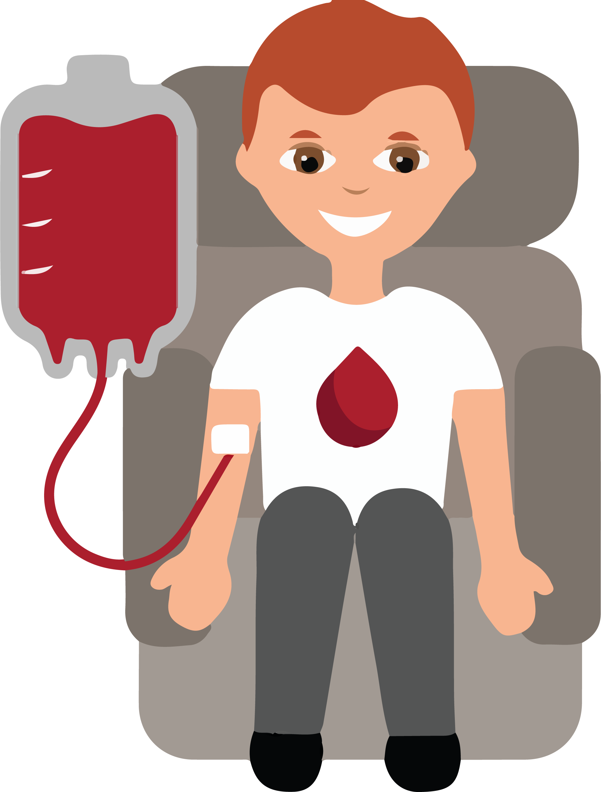

Doe sangue!
Seja um verdadeiro HERÓI
que transforma esperança em vida!
Mitos e verdades
As fake news existem até na doação de sangue. Descubra neste vídeo o que é verdade ou não.
Você Sabia?
Curiosidade nº1
Doar sangue não engrossa ou afina o
sangue isso é apenas um mito.